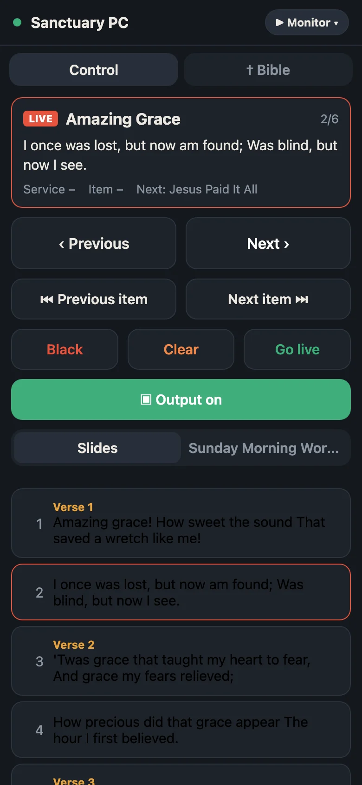
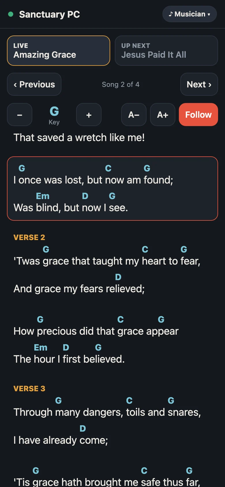

Everything for Sunday, in one window
Build the service order, preview what's next, and send it live to the projector. The congregation sees only what you choose.
Songs with chords
A song library with sections and slides. Chords stay off the screen but show for musicians.
Scripture
Search a passage or a phrase and put verses on screen in a click. Import Bibles in Zefania XML.
Presentations
Show PowerPoint, Keynote-exported PDF and OpenDocument slides alongside your songs.
Video, images and audio
Play media and playlists, with background music on its own channel and a sound monitor.
Overlay groups
Run a song over a looping video and music together. Each item swaps only its own layer.
Themes
Reusable backgrounds and text styles for songs, scripture and slides, including see-through text over video.
Two languages, any layout
Show a song in two languages on one slide, or just one. Save layouts like "Chorus only" and pick one per service.
Schedules
Save service orders, organize them into colored groups, and reopen them next week.
Bring your library
Import songs from EasyWorship and FreeShow so you don't start from scratch.
Run the service from your phone
Step through slides from the back of the room, put a verse on screen, or follow the chords on stage.
- No app needed: scan the QR code and the remote opens in your phone's browser, on the same Wi-Fi.
- Monitor runs the show: next slide or item, black, clear, the schedule and Bible verses.
- Musician shows the live song's chord sheet, transposes it, and follows along. Page ahead to the next song without changing what's on screen.
- A pairing code keeps other phones out.


Install
Download the installer and run it. It takes a minute and needs no administrator password.
- Windows 10 or 11, 64-bit
- Start menu and desktop shortcuts
- Updates install from inside the app
- Uninstall from Settings › Apps
- Run the downloaded
Psaltercast-<version>-windows-x64-setup.exe. - Psaltercast isn't signed by Microsoft yet, so SmartScreen may ask first: click More info, then Run anyway.
- Follow the installer, then start Psaltercast from the Start menu or the desktop.
Plug in a projector or TV as a second screen, and Psaltercast shows the output there in full screen.